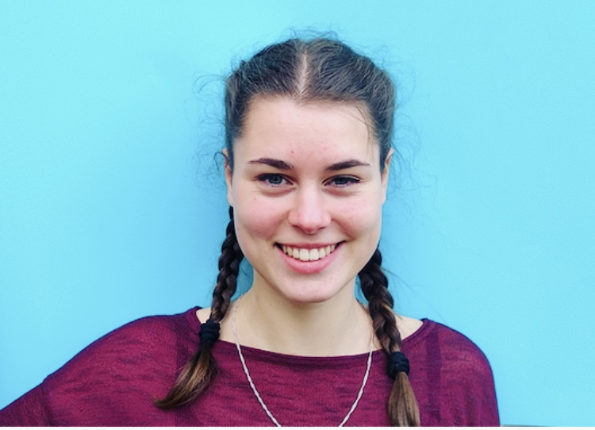
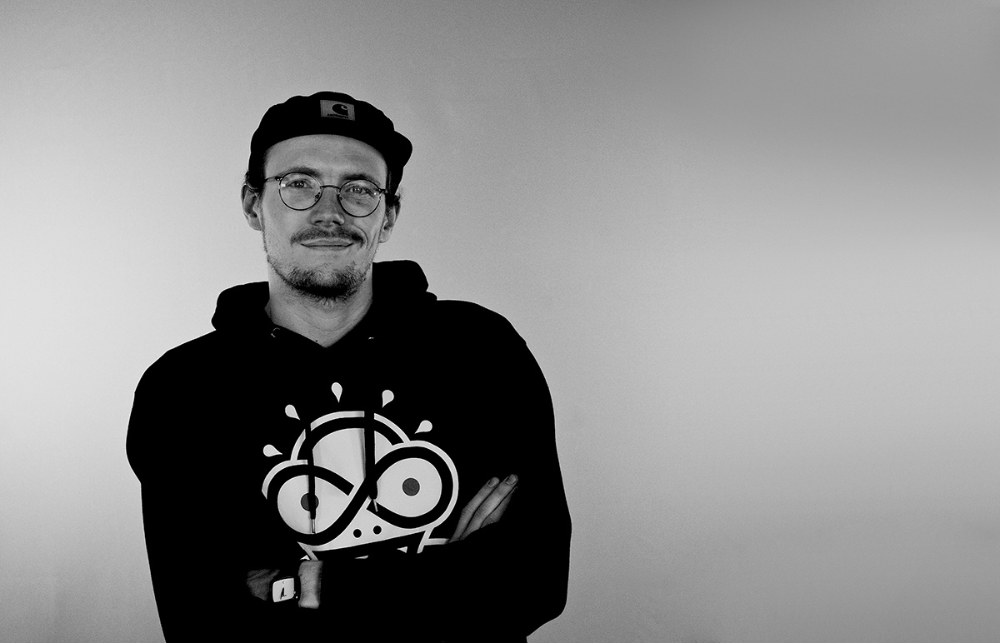
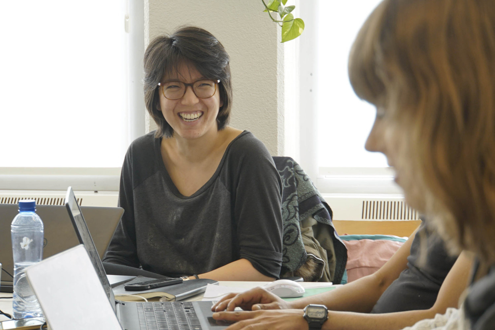

October 23, 2019
De onverwachte switch
Even voorstellen: dit is Merel, ze volgt nu al bijna drie maanden de creative
learning development track. Toen ze haar studie literatuurwetenschap had afgerond wist ze
niet zo goed hoe haar volgende stap eruit zou zien. Vooral de werkwijze en de persoonlijke
betrokkenheid bij Noah Road spraken haar aan.
Read more →
September 25, 2019
The beauty of creative storytelling
“Het leukste vind ik het contact met klanten en dat je aan het einde van een project
alle informatie hebt kunnen verwerken in een leuk kloppend verhaal”.
Read more →

June 26, 2019
The power of collaborative learning
“For me the group was one of the reasons I kept on going. The group keeps you motivated,
you help each other and create solutions together. It allows you to conquer challenges
you maybe could not handle on your own. ”
Read more →

June 26, 2019
How Front-end Development makes you a better webdesigner
‘I wanted to understand the developers better and be able to
think along with them. This would make me a better designer.’
Read more →